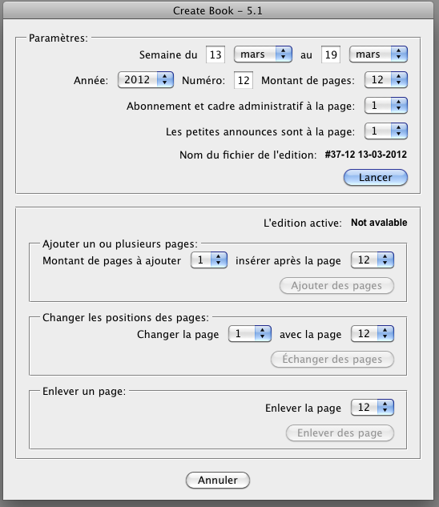
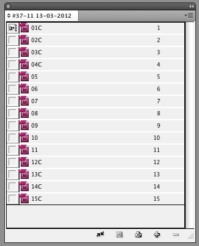

Create book
Requirements:
I need a script to automate the initial creation of the newspaper.
This will be done with the help of the Book feature in CS5.
Upon activation of the script...
Data Collection:
- A pop-up prompt intended to gather data for the date,
number(edition) for the newspaper as well as the amount of pages to be
used.
Semaine du [input day] au [input day] "select month {pulldown menu}"
[input year]
Numero [input number]
Page amount: "select page amount (even numbers, min 12 max 16 {pulldown menu}
Book creation:
- File -> New -> Book
- Create a New Folder in the path /Volumes/L'Express/ and name it
according to the data collected (I'll provide the naming scheme later)
- Create two New Folder (as in the Save dialogue) in the same
directory. Name them "Images" and "Textes"
- Name the Book the same as the directory in which it is located (see
step two above).
Adding Pages:
- Add the amount of pages as indicated in the Data Collection input prompt.
- Pages are added from the path /Volumes/L'Express/Templates
(there are up to sixteen sequenced templates e.g. 01.indt;
02.indt;...;16.indt)
- Name each page accordingly (01.indd, 02.indd, etc.) and save them in
the same directory as the Book.
- Add the date and number (as indicated in the Data Collection input)
to the first page and add the date to the folios of every other page.
I'll attach sample files later. Let me know your thoughts on the
implementation and a fee estimation.
The dialog box

The resulted book

Download the script from here.
Go back to the main Scripts for L'Express de Toronto Inc. page